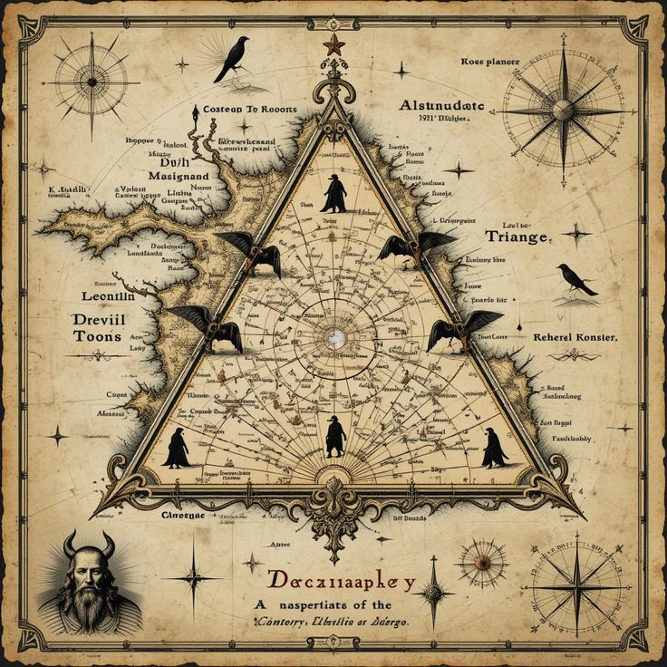
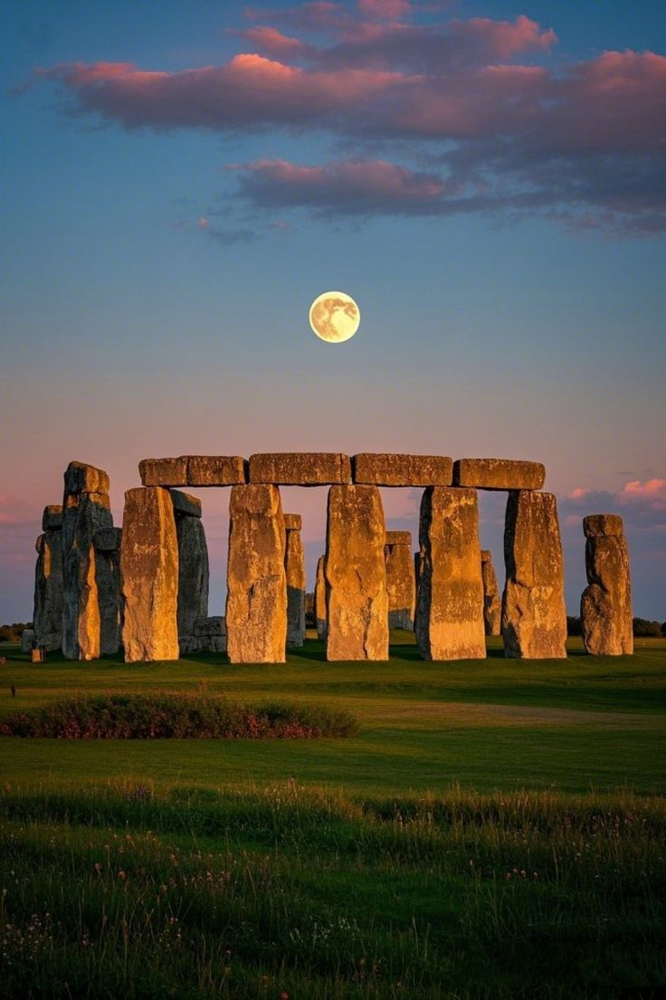
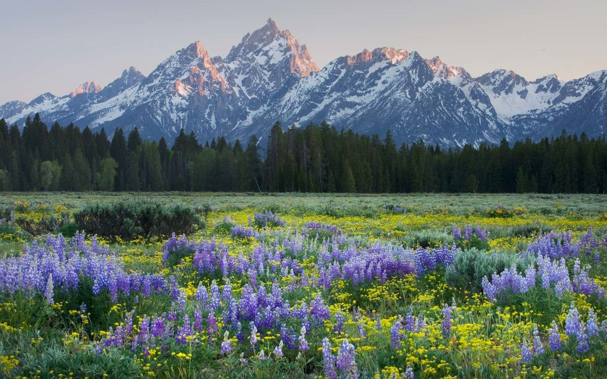
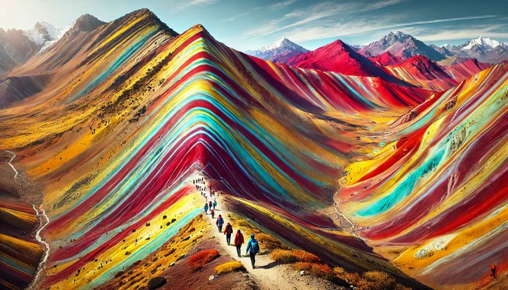
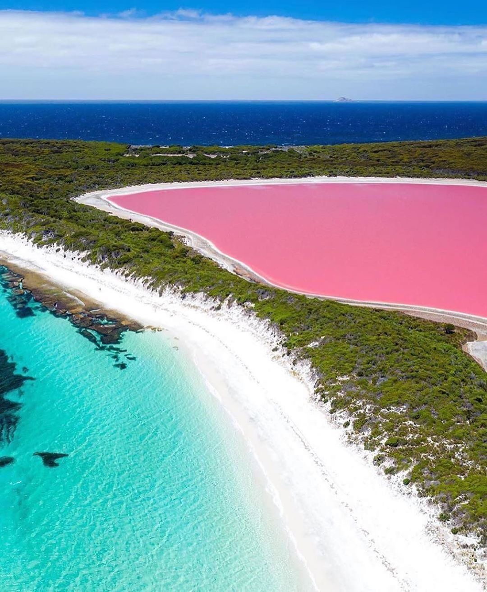

Locuri misterioase

Triunghiul Bermudelor
O regiune din Oceanul Atlantic cunoscută pentru disparițiile inexplicabile ale navelor și avioanelor. Multe teorii încearcă să explice aceste fenomene, de la anomalii magnetice la intervenții extraterestre.
Află mai multe Detaliu: Peste 50 de nave și 20 de avioane au dispărut aici.
Stonehenge
Un monument preistoric din Anglia, format dintr-un cerc de pietre uriașe. Scopul său exact rămâne necunoscut, deși se crede că a fost folosit ca observator astronomic sau loc de ceremonii religioase.
Află mai multe Detaliu: Pietrele cântăresc până la 25 de tone fiecare.
Grand Prismatic Spring, Yellowstone
Cel mai mare izvor termal din SUA măsoară între 60 și 90 de metri în diametru. Culorile sale de curcubeu au apărut datorită algelor termofile și a bacteriilor adaptate la condiții extreme.
Află mai multe Detaliu: Apa fierbinte din mijloc este complet sterilă.
Muntele Curcubeu, Peru
Cunoscut și sub numele de Vinicunca, acest loc a fost descoperit recent, în 2015, după ce zăpada s-a topit. Dungile sale spectaculoase sunt create de compoziția mineralogică unică.
Află mai multe Detaliu: Se află la o altitudine de peste 5.200 de metri.
Lacul Hillier, Australia
Apa roz a Lacului Hillier se datorează prezenței unor microalge și bacterii iubitoare de sare. Salinitatea sa extrem de ridicată este comparabilă cu cea din Marea Moartă.
Află mai multe Detaliu: Culoarea rămâne roz chiar dacă apa este pusă într-un pahar.Concluzie
Aceste locuri demonstrează cât de complexă și fascinantă este lumea noastră. Fiecare destinație aduce cu sine întrebări la care poate nu vom afla niciodată răspuncul, dar tocmai acest mister ne face să explorăm mai departe.